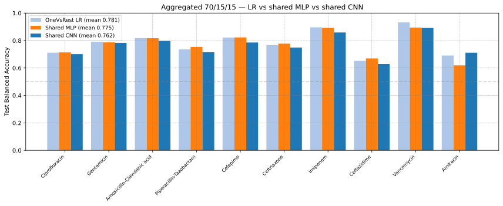

04 — Multi-Label Classifiers
Train on DRIAMS-A (9,443 samples), test on B, C, D — or pool all four sites. Predict resistance to 10 drugs simultaneously (Multi-label classification).
Objective
Instead of training 10 separate binary classifiers (one per drug), train a single neural network that predicts all 10 drug resistances at once from each spectrum. If a sample was not tested for a given drug, that label is masked and does not contribute to the loss (Label masking).
Two backbones are evaluated — a shared MLP (04-00) and a 1D CNN (04-01) — against a OneVsRest LogisticRegression baseline.
Data and Task
Input: 6000-bin MALDI-TOF spectra, log1p transform + Standardize to zero mean (fit on the training split only).
Labels: 10 drugs — Ciprofloxacin, Gentamicin, Amoxicillin-Clavulanic acid, Piperacillin-Tazobactam, Cefepime, Ceftriaxone, Imipenem, Ceftazidime, Vancomycin, Amikacin.
Label matrix
Yof shape(N, 10)with NaN where a sample was not tested; DRIAMS spectra carry ~6.3 known labels on average.Cross-site setting (04-00): train/validate on A — 7,554 / 1,889, species-stratified split 80/20 — and test on B, C, D and their pooled union B+C+D.
Aggregated setting (04-00 and 04-01): pool A+B+C+D (26,781 spectra) and split species-stratified 70/15/15 (18,745 / 4,018 / 4,018).
Why Multi-Label
A Per-drug model binary approach (01/02/07) uses only a single label per training sample. The Multi-label classification approach gets ~6× more training signal from the same data: ~6.3 labels per spectrum, i.e. ~60K label signals from the 9.4K A spectra. The Shared backbone can also learn cross-drug resistance patterns (e.g. ESBL-producing strains resistant to several β-lactams).
Approaches
- 00 — Shared-Backbone MLP
SpectralAttentionMLPwith attention disabled: a shared 6000→512→256→128 backbone and a single 128→10 output layer, one logit per drug. Masked BCE loss; 6×6 grid over learning rate (1e-4–5e-4) × dropout (0.2–0.6), candidates scored by per-drug thresholded macro Balanced Accuracy on the external validation split. The winning configuration is retrained for up to 100 epochs (AdamW, Cosine annealing, 10-epoch warmup, patience 15). Evaluated both cross-site and aggregated. See Multi-Label Architectures.- 01 — Shared CNN
Replaces the fully-connected backbone with four 1D convolution blocks (64/128/256/512 channels) and AdaptiveAvgPool(16); same 10-output head, Masked BCE loss and aggregated 70/15/15 split. 6×6 grid over learning rate (1e-5–5e-4, log scale) × dropout (0.1–0.6). Tests whether local spectral structure — adjacent m/z bins — is more informative than a fully-connected first layer. Aggregated only.
- Baseline — OneVsRest LR
10 independent L2 regularization LogisticRegression models with
class_weight='balanced'and per-drug thresholds tuned on the validation split (OneVsRest).
Key Findings
Multi-label ties the per-drug binary models. On B+C+D the shared MLP and OneVsRest LR are indistinguishable — macro Balanced Accuracy 0.636 vs 0.635, mean AUC 0.727 (LR) vs 0.708 (MLP) — and the aggregated MLP (0.775) sits level with the validation-tuned LR (0.781). The ~6× label signal does not translate into higher accuracy, consistent with 03, where the more complex models did not transfer or perform better.
Pooling recovers ~+0.14. Moving from cross-site training (A only) to aggregated training lifts the shared MLP from 0.635 to 0.775 macro Balanced Accuracy — the same pooled-vs-cross-site gap measured for the per-drug models in 03.
The CNN does not help. It trails the same LR baseline on 9 of 10 drugs (only Amikacin improves, +0.021) with a macro mean of 0.762 vs 0.781; local convolutional structure is not more informative than a global dense layer on binned spectra.


Aggregated 70/15/15 test Balanced Accuracy per drug for the three models. All thresholds are validation-tuned and all runs share the same split (seed 42).
Scope
This page documents the two base experiments, 04-00 (shared MLP) and
04-01 (shared CNN). The 04-Multi-Label-mlp directory additionally
contains follow-up explorations — sigmoid-gated attention on the
512-dim layer (04-02), wider backbones (04-03), class weighting (04-04 and
04-05) and a deprecated loss-curve diagnostic (04-06) — which are not part of
this documentation. Those follow-up notebooks were revised in October 2026 to
prefer the corrected 26,781-sample aggregated cache (with a warning when only
the legacy 26,642-sample cache is present); their earlier results were
produced with the legacy cache.
Notebooks
04-00-MultiLabel-CLassifier/04-MultiLabel-Classifier.ipynb — shared MLP (cross-site and aggregated), LR baseline, grid searches
04-00-MultiLabel-CLassifier/04-00b-Aggregated-LR-ValTuned.ipynb — standalone corrected aggregated LR baseline (validation-tuned thresholds)
04-01-MultiLabel-Cnn-Classifier/04-01-MultiLabel-Cnn-Classifier.ipynb — shared CNN (aggregated)
Outputs:
04-00-MultiLabel-CLassifier/01-results_multilabel/and04-01-MultiLabel-Cnn-Classifier/results_multilabel_cnn/